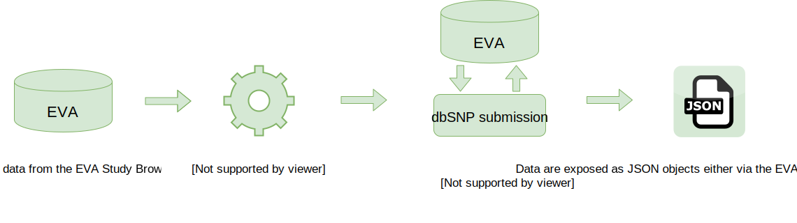

Overview
The European Variation Archive is an open-access database of all types of genetic variation data from all species.
All users can download data from any study, or submit their own data to the archive. You can also query all variants in the EVA by study, gene, chromosomal location or dbSNP identifier using our Variant Browser.
We will be adding new features to the EVA on a regular basis, and welcome your comments and feedback.
News
Statistics
Short Genetic Variants (<50bp)
Structural Variants (>50bp)
This web application makes an intensive use of new web technologies and standards like HTML5. Please see FAQs for further browser compatibility notes.
Submit
European Variation Archive submissions
EVA follows the infrastructure of fellow EMBL-EBI resources European Nucleotide Archive (ENA) and European Genome-phenome Archive (EGA) to accept, archive, and accession VCF files. Submissions consist of VCF file(s) and metadata that describe sample(s), experiment(s), and analysis that produced the variant and/or genotype call(s).
EVA works in collaboration with the Database of Genomics Variants Archive (DGVa) to accession and archive structural variants. DGVa relies on a template based submission process that is explained in detail here
Data submitted to EVA is brokered to our collaborating databases at NCBI, dbSNP and dbVar. It is therefore unnecessary to submit data to multiple resources. Please contact eva-helpdesk@ebi.ac.uk if you would like any further information on this brokering process or collaboration.
If you have data in a format other than VCF, which cannot be converted to VCF, please contact eva-helpdesk@ebi.ac.uk. Additional submission formats may be supported over time as required by the scientific community.
Key stages of EVA submissions
Contact
Contact eva-helpdesk@ebi.ac.uk in order to provide details of your submission.
Receive
Download your submission pack, which will include:
- Details for your submission uploads
- Templates to capture your associated metadata
- Key stages for your submission
To submit data to EVA please download this template, fill in and send by email to eva-helpdesk@ebi.ac.uk.
Submit
Upload your data files to your private submission upload account or directly to the eva-helpdesk@ebi.ac.uk.
To improve submission processing time, users are encouraged to prevalidate submitted files using the EVA VCF validation suite; more information can be found at our FAQs.
Clinically Relevant Genetic Variants
EVA welcomes submission of clinically relevant variant data from clinical testing labs, locus-specific databases, expert panels and professional societies. EVA works in collaboration with the ClinVar resource at NCBI to provide the most comprehensive dataset of clinically relevant variants available worldwide - all data in NCBI ClinVar is imported into the EVA database. For clinical data submitted directly to EVA, we shall create a submission to ClinVar on the user's behalf, with user's permission, thus exchanging data between EVA and ClinVar. Therefore, submitters should submit clinically relevant data once either to NCBI ClinVar or to EVA, but should not submit to both.
To submit data to EVA please download this template, fill in and send by email to eva-helpdesk@ebi.ac.uk.
Feedback
If you have any questions related to the European Variation Archive resource, please contact us.
Follow us on Twitter using @EBIvariation
Templates
EVA Submissions
Unless fully described in the header of the VCF file(s), EVA submissions are accompanied by an Excel spreadsheet and/or tab-delimited text files which describe the meta-data. We encourage our users to submit as much metadata as possible.
Please download our submission template via this link.
A completed template for a fictional submission can be downloaded here.
EVA Clincal Submissions
EVA Clinical submissions are described via an Excel spreadsheet and/or tab-delimited text files. Our submissions templates are fully compliant with the data required for ClinVar allowing us to broker the submission of all EVA Clincal data to our collaborating NCBI resource.
Please download our EVA Clinical submission template via this link.
API
The general structure of a EVA RESTful web service URL is:
http://www.ebi.ac.uk/eva/webservices/rest/{version}/{category}/IDs/{resource}?{filters}
Where:
* version: indicates the version of the API, this defines the available filters and JSON schema to be returned. Currently there is only version 'v1'.
* category: this defines what objects we want to query. Currently there are five different categories: variants, segments, genes, files and studies.
* resource: specifies the resource to be returned, therefore the JSON data model.
* filters: each specific endpoint allows different filters.
RESTfull web services have been implemented using GET protocol since only queries are allowed so far. Several IDs can be concatenated using comma as separator.
For more detailed information about the API and filters you can visit the project wiki and Swagger documentation.
Some example of queries include:
* To fetch all the variants in a segment region:
http://www.ebi.ac.uk/eva/webservices/rest/v1/segments/11:128446-128446/variants?species=hsapiens_grch37
* To fetch all the info of a variant:
http://www.ebi.ac.uk/eva/webservices/rest/v1/variants/rs666/info?species=hsapiens_grch37
* To fetch all the Short Genetics Variations studies:
http://www.ebi.ac.uk/eva/webservices/rest/v1/meta/studies/all
* To fetch all the Structural Variations studies:
http://www.ebi.ac.uk/eva/webservices/rest/v1/meta/studies/all?structural=true
* To fetch all info of a study:
http://www.ebi.ac.uk/eva/webservices/rest/v1/studies/PRJEB4019/summary
* To fetch all file information of a study:
http://www.ebi.ac.uk/eva/webservices/rest/v1/studies/PRJEB4019/files?species=hsapiens_grch37
FAQ
-
What is the European Variation Archive (EVA)?
The European Variation Archive (EVA) is EMBL-EBI’s open-access genetic variation archive. The EVA accepts submission of all types of genetic variants, ranging from single nucleotide polymorphisms to large structural variants, observed in germline or somatic sources, from any eukaryotic organism. The EVA permits access to these data at two distinct levels:
i) The raw variant data as was submitted to the EVA, via the EVA Study Browser
ii) The normalised and processed variant data, via the EVA Variant Browser and EVA API
-
Why submit data to the EVA?
The EVA provides to the community a completely free, secure and permanent solution to data sharing. Each project, VCF file and sample that is submitted to the EVA is assigned a unique identifier that is accessible in perpetuity and is therefore able to be referenced in publication, for example. The EVA helpdesk provides support to submitters, and users, to ensure accurate represention and proper integration of the submitted data with other EMBL-EBI resources such as the EGA and Ensembl. A final advantage of submitting to the EVA is that variants are brokered to the National Centre for Biotechnology Information (NCBI) on the submitter’s behalf, negating the requirement for independent submissions.
-
Is my data suitable for submission to the EVA?
The most important consideration is that all data archived at the EVA is open access. As such, there are no restrictions as to who can access the data or how such data is reused. It is the submitter’s responsibility to ensure that the data archived at the EVA complies to this open access policy.
Genetic variants submitted to the EVA must be described in the Variant Call Format (VCF). The EVA has developed a custom VCF file validator and accepts submission of only VCF files that pass these validation steps. Furthermore, VCF files submitted to the EVA should provide either genotypes from the individual samples analysed, or aggregated sample summary information, such as allele frequencies.
Finally, each submission to the EVA is accompanied by a completed metadata template . This metadata template captures the study description, details of the sample(s) analysed and the experimental methodology. Submission of as much metadata as possible is strongly encouraged as this information is extremely useful for downstream analysis and is directly related to the frequency at which datasets archived at EVA are reused.
-
What happens to my data once submitted?

Submission validation processes
VCF Specification:
All VCF files submitted to EVA are validated for adherence to the format specification using the EVA VCF validation suite which includes all the checks from the vcftools suite, and some more that involve lexical, syntactic and semantic analysis of the VCF input. The EVA VCF validation suite also includes a debugging tool to automatically correct many of the common errors found in files. In order to improve processing time, submitters are encouraged to prevalidate VCF files prior to submission.
Genome Assembly:
To improve interoperability of variant data submitted to EVA with other resources at EMBL-EBI, and the wider open-access community, all VCF files submitted are subject to validation against the INSDC accessioned genome assembly that is referenced in the associated EVA metadata template. EVA is able to only accept files that match a known assembly at 100%. VCF files that fail this validation step shall be archived at the European Nucleotide Archive only.
Submission summary
All VCF files and novel samples that are submitted to EVA are permanently and securely archived at the European Nucleotide Archive and BioSamples , respectively. The EVA provides access to all submitted data via the EVA Study Browser.
Variants within VCF files submitted to EVA are normalised, annotated and used for statistical calculations (via methodologies described below) and these EVA processed data are available via the EVA Variant Browser and EVA API.
Finally, the EVA brokers all submitted data to the NCBI: dbSNP, for short variants (<50bp); dbVar for large variants (>50bp) or ClinVar, for variants associated with both a phenotype and clinical significance.
-
What are the EVA normalisation and variant processing steps?
 Variants are merged, normalized and annotated for functional consequences and statistical values -> Processed variants are brokered to dbSNP at NCBI and resulting 'ss' and 'rs' accessions are ingested by EVA -> Data are exposed as JSON objects either via the EVA website GUI or API">
Normalisation
Variants submitted to the EVA have been determined by a number of different algorithms and software packages. As a result, the VCF files generated by these differing methodologies describe variants in a number of different ways. The primary processing step of the EVA is to normalise variant representation following two basic rules:
- Each variant is shifted to be left-aligned
- The Start and End positions represent exactly the range where the variation occurs (which could, in the case of insertions, result in the reference allele being recorded as ‘empty’)
Examples of our variant normalisation process can be seen here
Annotation
Once variants have been normalised, the EVA uses the Variant Effect Predictor (VEP) of Ensembl to annotate variant consequences. The variant consequences are described using Sequence Ontology terms and both the VEP version and Ensembl gene build used are described via the “i” help bubbles on the EVA Variant Browser.
N.B. Variants that have been mapped to a reference genome sequence that is not supported by Ensembl are not annotated.Statistical calculations
The EVA adopts the classical definition of allele frequency (AF): ‘a measure of the relative frequency of an allele at a genetic locus in a given population’. The AF value(s) stored by the EVA for each variant is (are) study specific - i.e. the same variant reported in two distinct studies shall be given two allele frequencies, one for each study. There are two methodologies by which the EVA is able to determine allele frequency values, dependent on the datatype of the study in question:
Variants associated with genotypes:
For variants associated with genotypes, the EVA determines the AF values via the calculation:
AF = (number of alternate allele observations (AC)) / (number of observations (AN))
The result of this calculation allows the EVA to also store the minor allele frequency (MAF) for each variant (defined as the minimum of the reference or alternative allele frequency) and the MAF allele (the allele associated with the MAF).Variants not associated with genotypes:
For variants that are not associated with genotypes, the EVA is dependent on the AF value(s) estimated from the primary data and provided in the submitted VCF files(s). AF values that are specifically provided in the submitted aggregated VCF file(s) are directly stored. In cases where no AF is provided then the EVA uses the AC and AN values in the submitted aggregated VCF file(s) to calculate AF value(s) via the calculation:
AF = AC / ANPopulation / sample cohort allele frequency values:
The EVA accepts submission of pedigree files, or structured samples (using “derived_from” and/or “subject” layers), to define populations and cohorts within studies. In cases where such information is associated with variants that have genotypes then the EVA calculates intra-study population/cohort specific AF values via the method described above, with the caveat that the (total number of populations/cohorts):(total number of samples) ratio must be less than 1:10. For studies that do not contain genotypes but instead provide intra-study population/cohort AF values in the submitted aggregated VCF file(s), or AC and AN values, then these are directly stored, or calculated by the EVA using the method described above, again with the caveat that a ratio of 1:10 (total number of populations/cohorts):(total number of samples) must not be exceeded.
*NB: there are a low number of variants for which the EVA is unable to determine any allele frequency value(s) as the submitted VCF file(s) contain neither genotypes nor AF or AC and AN values. The EVA discourages submission of variants that cannot be associated with an AF. -
How can I consume variant data from the EVA?
All EVA files are hosted on our FTP site and are freely downloadable. Each EVA project FTP site allows users to download the original files as they were submitted to the EVA and/or the EVA ‘normalised’ files. Please note that due to processing time required not all EVA projects shall have ‘normalised’ files just yet.
Additionally users can download query results from the EVA variant browser directly and all of our data is available programmatically via our API.
-
What data is shown in the EVA Clinical Browser?
The EVA Clinical Browser displays variant data imported from the NCBI resource ClinVar, where each variant is associated with both a phenotype and a clinical significance assigned using the guidlines from the American College of Medical Genetics and Genomics. Importantly, the variants shown via the EVA Clinical Browser have been annotated against the human GRCh37 genome using both the VEP and GENCODE Basic gene build of Ensembl version 78.
-
With whom does the EVA collaborate?

The EVA & GEUVADIS European Exome Variant Server
The EVA & GEUVADIS European Exome Variant Server (GEEVS;) work in collaboration to coordinate common data formats for data exchange. As part of this collaboration, we fully endorse the variant calling protocol detailed on the GEEVS website as adherence to this protocol for variant calling permits direct comparison and/or aggregation of results from different datasets.
The EVA & Príncipe Felipe Research Center
Some of the technical and analytical features of the EVA were developed in collaboration with the department of Computational Genomics led by Joaquin Dopazo at the Principe Felipe Research Centre Computational Genomics Department (CIPF).
Past Collaborations
EVA & The Genomics and Bioinformatics Platform of Andalusia
Early development of the EVA was carried out in collaboration with the Bioinformatics Department at the Genomics and Bioinformatics Platform of Andalusia.
-
Which browsers does the EVA website support?
The EVA website employs HTML5 technologies and standards. Chrome (version 18 or higher), Firefox (version 12 or higher), Safari (version 6 or higher) , Opera (version 12 or higher) and Internet Explorer (version 10 or higher) are fully supported, however older versions of these browsers may give rise to errors.
The EVA website also supports mobile versions of web browsers, with limited functionality. Please report all errors to the EVA helpdesk. -
How can I follow the development of the EVA?
The following are our GitHub repositories:
-
The EVA VCF validator checks that a file is compliant with the VCF specification. It includes and expands the validations supported by the vcftools suite. It supports versions 4.1, 4.2 and 4.3 of the specification.
-
The EVA pipeline processes VCF files, stores the variation data in a database and post-processes it, in a way that can be later consumed via web services.
-
The EVA web services serve the data generated and stored by the EVA pipeline. They follow the REST paradigm and can be consumed by any external application.
-
The EVA website displays the data served by the EVA REST web services API in a user-friendly way.
Acknowledgement
We would like to acknowledge the following software support.


-